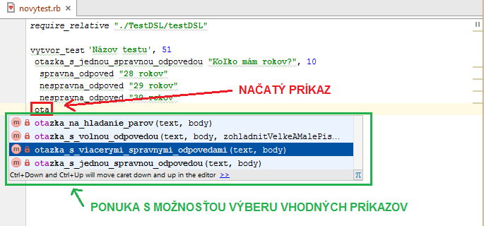
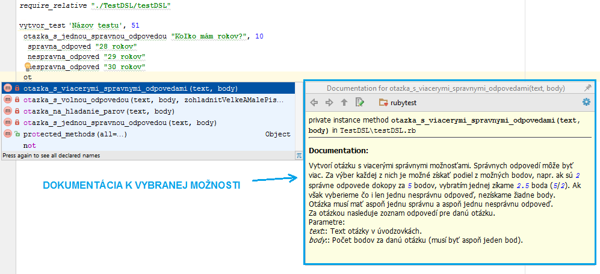
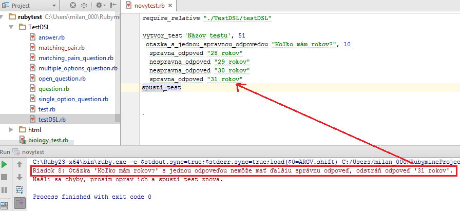

RubyMine Environment
Section Creating new test we saw how to work in RubyMine to create a new test. In this section we will take a look at some awesome features that can be used during creating the test.
Code completion
One of the most powerful features of the editor is code completion. In the Test-it! language you can use this feature to define the test faster and more reliably. When a typing cursor is on a place, where a command should be used, you can press Ctrl + Space to have the editor present a menu with options that can be typed in that place. In general, there are too many options, but if you start typing the command that you want to type in, the editor will reduce the menu to commands starting with the given prefix (see following figure, we used the red color to highlihgt the prefix of the command that I managed to typy in so far, and green color is used to highlight the menu of commands with that prefix). Using up and down arrows you can select an appropriate command from the menu, pressing Enter keyboard button will select the command and insert it into the editor on the place of cursor (thanks to this we don't have to type it whole).
{kind=link}
Documentation
Another help we can get in RubyMine is a quick documentation directly in the editor. If you put the typing cursor on some command (or when you are selecting in the menu for code completion), and you press Ctrl + Q, a popup with documentation of the command will be presented. See example in following figure:
{kind=link}
Error support
If you do not keep all the rules for test definition, an error wil occur and the test will not be runnable. In such a case an error is reported by the editor. For example, we might by accident define two correct answer options in a single choice question. In this case if we would try to run the test we would get following error saying that there cannot be another correct answer option ('spravna_odpoved' in Slovak) in a single choice question ('otazka_s_jednou_spravnou_odpovedou' in Slovak):
{kind=link}
The error description specifies the line in which the error was detected, and what is the error about. It also suggests possible solution (in this case removing the second correct option, or changing the question type to a one that supports mutliple correct answers).